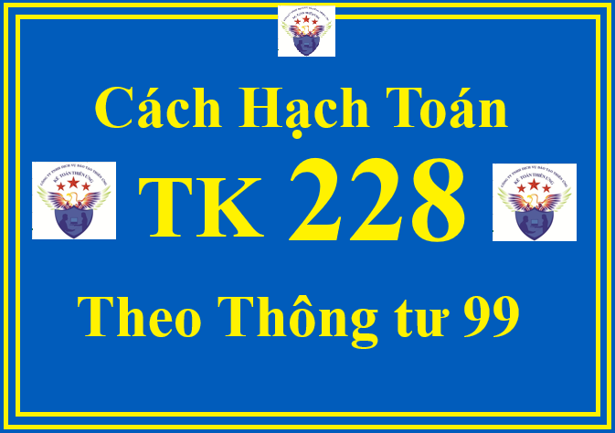

Tài khoản 228 - Đầu tư khác theo Thông tư 99/2025/TT-BTC dùng để phản ánh giá trị hiện có và tình hình biến động táng, giảm các khoản đầu tư khác (ngoài các khoản đầu tư vào công ty con, đầu tư vào công ty liên doanh, liên kết), như:
+ Các khoản đầu tư vào công cụ vốn của đơn vị khác nhưng không có quyền kiểm soát hoặc đồng kiểm soát, không có ảnh hưởng đáng kể đối với bên được đầu tư; Khoản đầu tư vào hợp đồng BCC mà doanh nghiệp không có quyền đồng kiểm soát nhưng được hưởng lợi ích phụ thuộc vào lợi nhuận sau thuế của hợp đồng BCC.
+ Các khoản kim loại quý, đá quý không sử dụng như nguyên vật liệu để sản xuất sản phẩm hoặc mua vào - bán ra như hàng hóa; Tranh, ảnh, tài liệu, vật phẩm có giá trị không tham gia vào hoạt động sản xuất kinh doanh thông thường. Trường hợp có bằng chứng chắc chắn cho thấy các khoản đầu tư này bị giảm giá so với giá trị thị trường và khoản giảm giá được xác định một cách đáng tin cậy thì doanh nghiệp được ghi giảm giá trị khoản đầu tư và ghi nhận tổn thất vào chi phí tài chính.
+ Các khoản đầu tư khác.
Lưu ý:
+ Doanh nghiệp phải theo dõi chi tiết từng khoản đầu tư khác theo số lượng cổ phiếu, phần vốn góp tại bên được đầu tư.
+ Kế toán tuân thủ các nguyên tắc kế toán khoản đầu tư vào đơn vị khác theo quy định tại Thông tư này.
1. Kết cấu và nội dung phản ánh của Tài khoản 228 - Đầu tư khác theo Thông tư 99/2025/TT-BTC
| Bên Nợ: | Bên Có: |
| Giá trị các khoản đầu tư khác tăng. |
Giá trị các khoản đầu tư khác giảm.
|
|
Số dư bên Nợ:
Giá trị khoản đầu tư khác hiện có tại thời điểm kết thúc kỳ kế toán.
|
Tài khoản 228 - Đầu tư khác có 2 tài khoản cấp 2:
+ Tài khoản 2281 - Đầu tư góp vốn vào đơn vị khác: Phản ánh các khoản đầu tư công cụ vốn nhưng doanh nghiệp không có quyền kiểm soát, đồng kiểm soát hoặc có ảnh hưởng đáng kể đối với bên được đầu tư. Ngoài ra, tài khoản này còn phản ánh các khoản đầu tư vào hợp đồng BCC mà doanh nghiệp không có quyền đồng kiểm soát nhưng được hưởng lợi ích phụ thuộc vào lợi nhuận sau thuế của hợp đồng BCC.
+ Tài khoản 2288 - Đầu tư khác: Phản ánh các khoản đầu tư vào tài sản phi tài chính ngoài BĐSĐT và các khoản đã được phản ánh trong các tài khoản khác liên quan đến hoạt động đầu tư. Các khoản đầu tư khác có thể gồm kim loại quý, đá quý (không sử dụng như hàng tồn kho), tranh, ảnh, tài liệu, vật phẩm khác có giá trị (ngoài những khoản được phân loại là TSCĐ)... không tham gia vào hoạt động sản xuất kinh doanh thông thường nhưng được mua với mục đích nắm giữ chờ tăng giá.
2. Cách định khoản hạch toán Tài khoản 228 - Đầu tư khác theo Thông tư 99/2025/TT-BTC
2.1. Khi doanh nghiệp đầu tư mua cổ phiếu hoặc góp vốn dài hạn nhưng không có quyền kiểm soát, đồng kiểm soát hoặc ảnh hưởng đáng kể đối với bên được đầu tư:
a) Trường hợp đầu tư bằng tiền
Nợ TK 228 - Đầu tư khác (2281) (theo giá gốc khoản đầu tư + Chi phí trực tiếp liên quan đến hoạt động đầu tư, như chi phí môi giới,...)
Có TK 112 - Tiền gửi không kỳ hạn.
Đồng thời mở sổ chi tiết để theo dõi từng loại cổ phiếu theo mệnh giá (nếu đầu tư dưới hình thức mua cổ phiếu) hoặc theo dõi giá trị vốn điều lệ tại công ty được đầu tư (nếu doanh nghiệp nhận đầu tư không phải là công ty cổ phần).
b) Trường hợp đầu tư bằng tài sản phi tiền tệ:

- Trường hợp góp vốn bằng tài sản phi tiền tệ, căn cứ vào giá đánh giá lại vật tư, hàng hóa, TSCĐ, ghi:
Nợ TK 228 - Đầu tư khác (2281)
Nợ TK 214 - Hao mòn TSCĐ (giá trị hao mòn lũy kế)
Nợ TK 811 - Chi phí khác (số chênh lệch giữa giá đánh giá lại nhỏ hơn giá trị ghi sổ của hàng tồn kho hoặc giá trị còn lại của TSCĐ)
Có các TK 152, 153, 156, 211, 213,... (giá trị ghi sổ của hàng tồn kho hoặc nguyên giá TSCĐ)
Có TK 711 - Thu nhập khác (số chênh lệch giữa giá đánh giá lại lớn hơn giá trị ghi sổ của hàng tồn kho hoặc giá trị còn lại của TSCĐ).
- Trường hợp mua lại phần vốn góp bằng tài sản phi tiền tệ:
+ Trường hợp trao đổi bằng TSCĐ:
Nợ TK 811 - Chi phí khác (giá trị còn lại của TSCĐ đưa đi trao đổi)
Nợ TK 214 - Hao mòn TSCĐ (giá trị hao mòn)
Có các TK 211, 213 (nguyên giá).
Đồng thời ghi nhận thu nhập khác và tăng khoản đầu tư dài hạn khác do trao đổi TSCĐ:
Nợ TK 228 - Đầu tư khác (2281) (tổng giá thanh toán)
Có TK 711 - Thu nhập khác
Có TK 3331 - Thuế GTGT phải nộp (TK 33311) (nếu có).
+ Trường hợp trao đổi bằng sản phẩm, hàng hóa, khi xuất kho sản phẩm, hàng hóa đưa đi trao đổi, ghi:
Nợ TK 632 - Giá vốn hàng bán
Có các TK 155, 156,...
Đồng thời phản ánh doanh thu bán hàng và ghi tăng khoản đầu tư khác:
Nợ TK 228 - Đầu tư khác (2281) (tổng giá thanh toán)
Có TK 511 - Doanh thu bán hàng và cung cấp dịch vụ
Có TK 333 - Thuế và các khoản phải nộp Nhà nước (33311) (nếu có).
2.2. Kế toán cổ tức, lợi nhuận được chia bằng tiền:
- Phản ánh khoản phải thu về cổ tức, lợi nhuận được chia, ghi:
Nợ TK 138 - Phải thu khác (1388)
Có TK 515 - Doanh thu hoạt động tài chính (trường hợp cổ tức, lợi nhuận được chia phân bổ cho giai đoạn sau ngày đầu tư)
Có TK 228 - Đầu tư khác (2281) (trường hợp cổ tức, lợi nhuận được chia phân bổ cho giai đoạn trước ngày đầu tư).
- Khi nhận được cổ tức, lợi nhuận được chia bằng tiền, ghi:
Nợ các TK 111, 112
Có TK 138 - Phải thu khác (1388).
2.3. Khi nhà đầu tư bán một phần khoản đầu tư vào công ty con, công ty liên doanh, công ty liên kết dẫn đến không còn quyền kiểm soát hoặc không còn quyền đồng kiểm soát hoặc không còn ảnh hưởng đáng kể, ghi:
Nợ các TK 112, 131...
Nợ TK 228 - Đầu tư khác (2281)
Nợ TK 635 - Chi phí tài chính (nếu lỗ)
Có các TK 221, 222
Có TK 515 - Doanh thu hoạt động tài chính (nếu lãi).
2.4. Thanh lý, nhượng bán các khoản đầu tư khác:
- Trường hợp bán, thanh lý có lãi, ghi:
Nợ các TK 112, 131,... (giá bán)
Có TK 228 - Đầu tư khác (giá trị ghi sổ)
Có TK 515 - Doanh thu hoạt động tài chính (giá bán lớn hơn giá trị ghi sổ).
- Trường hợp bán, thanh lý bị lỗ, ghi:
Nợ các TK 112, 131... (gia bán)
Nợ TK 635 - Chi phí tài chính (giá bán nhỏ hơn giá trị ghi sổ)
Có TK 228 - Đầu tư khác (giá trị ghi sổ).
2.5. Khi nhà đầu tư đầu tư góp thêm vốn và làm khoản đầu tư khác chuyển thành khoản đầu tư vào công ty con, công ty liên kết, ghi:
Nợ các TK 221, 222
Có các TK 111, 112 (số tiền đầu tư thêm)
Có TK 228 - Đầu tư khác.